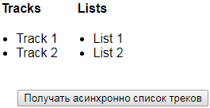
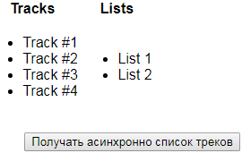

Асинхронные екшены с помощью redux-thunk
Установка пакета redux-thunk
$ npm install redux-thunk --save
В папке ./src/reducers файл index.js подключаем метод applyMiddleware и библиотеку redux-thunk. При создании хранилища вторым параметром передаем applyMiddleware(thunk)
import { createStore, applyMiddleware } from 'redux';
import thunk from 'redux-thunk';
const store = createStore(reducer, applyMiddleware(thunk));
Необходимо создать папку ./src/actions и в ней файл track.js (это action, он выполняет dispatch данных в хранилище по истечению таймера.)
var dataTracks = ['Track #1', 'Track #2', 'Track #3', 'Track #4'];
export default function asyncGetTracks (dispatch) {
return dispatch => {
setTimeout(() => {
console.log('I got tracks');
dispatch({ type: 'GET_TRACKS', payload: dataTracks });
}, 2000)
}
}
В папке ./src/reducers изменим файл tracks.js добавим обработку GET_TRACKS
const initialState = ['Track 1', 'Track 2'];
export default function playList(state = initialState, action){
if(action.type === 'ADD_TRACK'){
return [
...state,
action.payload
]
}else if(action.type === 'GET_TRACKS'){
return action.payload;
}
return state;
}
В папке ./src/components изменим файл TrackList.js добавим кнопку получания данных
 |
 |
Импортируем ранее созданый action находящийся в папке ./src/actions файл track.js
В разделе визуализации добавляем кнопку с вызовом функции onGetTracks которая описана ниже в функции mapDispatchToProps
import React, { Component } from 'react';
import { connect } from 'react-redux';
import asyncGetTracks from '../actions/tracks';
class TrackList extends Component {
...
render() {
return (
<div>
...
<br />
<div>
<button onClick={this.props.onGetTracks}>
Получать асинхронно список треков
</button>
</div>
</div>
);
}
}
/* Получаем данные из хранилища */
const mapStateToProps = (state, ownProps) => {
return {
store: state
};
}
/* Обновляем данные в хранилище */
const mapDispatchToProps = (dispatch) => {
return {
onAddTrack: (trackName) => {
dispatch({ type: 'ADD_TRACK', payload: trackName });
},
onAddList: (listName) => {
dispatch({ type: 'ADD_LIST', payload: listName });
},
onGetTracks: () => {
dispatch(asyncGetTracks(dispatch));
}
}
};
/* Соединяем компонент с хранилищем */
export default connect(mapStateToProps, mapDispatchToProps)(TrackList);
В файле App.js импортируем наши компонент и добавяем их в render
import TrackList from './components/TrackList';
import PriceFilter from './components/PriceFilter';
<TrackList />
<PriceFilter />
Created with the Personal Edition of HelpNDoc: Produce electronic books easily